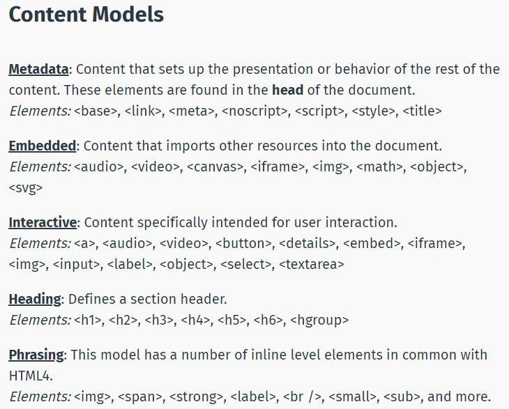

This document following , SoloLearn HTML Course
The ability to code using HTML is essential for any web professional. Acquiring this skill should be the starting point for anyone who is learning how to create content for the web. HTML files are text files, so you can use any text editor to create your first webpage. HTML file names should end in either .html or .htm .
When writing HTML5 documents, one of the first new features that you'll notice is the doc type declaration: |!DOCTYPE HTML|
The character encoding (charset) declaration is also simplified: |meta charset="UTF-8"|
For favicon |link rel="icon" href="images/favicon.png" type="image/x-icon" /|
HTML is not a case sensitive language. Horizontal Lines : |hr| defines a thematic break.
 HTML: Structure
CSS: Presentation
JavaScript: Behavior
PHP or similar: Backend
CMS: Content Management
This is regular text.
This is bold text.
This is italic text.
This is big text.
This is small text.
This is strong text.
This is subscripted text.
This is inserted text.
This is deleted text.
Attributes provide additional information about an element or a tag, while also modifying them. Most attributes have a value; the value modifies the attribute. Attributes are always specified in the start tag, and they appear in name="value"pairs. An element's width and high can be defined using pixels or percentages. width = "50px" or high = "50%"
HTML Colors are expressed as hexadecimal values. RGB color values are supported in all browsers. 0, 1, 2, 3, 4, 5, 6, 7, 8, 9, A, B, C, D, E, F As you can see, there are 16 values there, 0 through F. Zero represents the lowest value, and F represents the highest. Hex values are written using the hashtag symbol (#), followed by either three or six hex characters.
The bgcolor attribute can be used to change the web page's background color.
The |img| tag is used to insert an image. It contains only attributes, and does not have a closing tag. The image's URL (address) can be defined using the src attribute.The alt attribute specifies an alternate text for an image.
|img src="image.jpg" alt = "" | o define the image size, use the width and height attributes.
The value can be specified in pixels or as a percentage. By default, an image has no borders. Use the border attribute within the image tag to create a border around the image.

Links are also an integral part of every web page. You can add links to text or images that will enable the user to click on them in order to be directed to another file or webpage. In HTML, links are defined using the |a| tag.Use the href attribute to define the link's destination address. To link an image to another document, simply nest the |img| tag inside |a| tags.
Click here to href Google.
Click here to href Google in New Tab.
The target attribute specifies where to open the linked document. Giving a _blank value to your attribute will have the link open in a new window or new tab. A visited link is underlined and purple.
HTML Ordered List starts with the |ol| tag, and each list item is defined by the |li| tag. The list items will be automatically marked with numbers.
An Unordered List starts with the |ul| tag. The list items will be marked with bullets:
Tables are defined by using the |table| tag. Tables are divided into table rows with the |tr| tag. Table rows are divided into table columns (table data) with the |td| tag. Table data tags |td|act as data containers within the table. They can contain all sorts of HTML elements, such as text, images, lists, other tables, and so on. A border can be added using the border attribute. Here is an example of a table with four row and three columns:
| Row 1 -Table Column 1 | Row 1 -Table Column 2 | Row 1 -Table Column 3 |
| Row 2 -Table Column 1 | Row 2 -Table Column 2 | |
| Row 3 -Table Column 1 | Row 3 -Table Column 2(Colspan Power !) | |
| Row 4 -Table Column 1 | ||
In HTML, most elements are defined as block level or inline elements. Block level elements start from a new line.
For example: |h1|, |form|, |li|, |ol|, |ul|, |p|, |pre|, |table|, |div|, etc.
Inline elements are normally displayed without line breaks.
For example: |b|, |a|, |strong|, |img|, |input|, |em|, |span|, etc.
The |div| element is a block-level element that is often used as a container for other HTML elements.
When used together with some CSS styling, the |div| element can be used to style blocks of content:
Div usage example :
style = "background-color:green; color : white; padding : 20px"
Similarly, the |span| element is an inline element that is often used as a container for some text. When used together with CSS, the |span| element can be used to style parts of the text:
Some Important Message
Summary:
The |div| element defines a block-level section in a document.
The |span| element defines an inline section in a document.
Other elements can be used either as block level elements or inline elements. This includes the following elements:
APPLET - embedded Java applet
IFRAME - Inline frame
INS - inserted text
MAP - image map
OBJECT - embedded object
SCRIPT - script within an HTML document
You can insert inline elements inside block elements. For example, you can have multiple |span| elements inside a |div| element. Inline elements cannot contain any block level elements.
HTML forms are used to collect information from the user. Usually the form is submitted to a web page on a web server.
The method attribute specifies the HTTP method (GET or POST) to be used when forms are submitted. The name attribute specifies a name for a form.
|form action="url" method="GET"| OR |form action="url" method="POST"|
When you use GET, the form data will be visible in the page address. Use POST if the form is updating data, or includes sensitive information (passwords). POST offers better security because the submitted data is not visible in the page address. After the form is submitted, the data should be processed on the server using a programming language, such as PHP.
To take in user input, you need the corresponding form elements, such as text fields. The |input| element has many variations, depending on the type attribute. It can be a text, password, radio, URL, submit, etc.
The autofocus attribute makes the desired input focus when the form loads.
The required attribute is used to make the input elements required.
HTML5 added several new input types:
- color
- date
- datetime
- datetime-local
- email
- month
- number
- range
- search
- tel
- time
- url
- week
New input attributes in HTML5:
- autofocus
- form
- formaction
- formenctype
- formmethod
- formnovalidate
- formtarget
- height and width
- list
- min and max
- multiple
- pattern (regexp)
- placeholder
- required
- step
Note : Input types that are not supported by old web browsers, will behave as input type text.
The new search input type can be used to create a search box. The |datalist| tag can be used to define a list of pre-defined options for the search field:
If we change the input type to "radio", it allows the user select only one of a number of choices:
MaleThe type "checkbox" allows the user to select more than one option:
Male|audio autoplay loop controls|
|source src="audio.mp3" type="audio/mp3"|
|source src="audio.ogg" type="audio/ogg"|
Audio element not supported by your browser
|/audio|
Replace audio with video if needed. Use |iframe| element for Youtube videos.
Attributes : controls => Specifies that media controls should be displayed (such as a play/pause button, etc.)
autoplay => When this attribute is defined, media starts playing as soon as it is ready, without asking for the visitor's permission.
loop => This attribute is used to have the audio replay every time it is finished.
Supported audio formats: MP3, WAV, and OGG. Supported video formats: MP4,OGG
Another aspect that the audio and video elements have in common is that the major browsers do not all support the same file types. If the browser does not support the first media type, it will try the next one.
Music = www.bensound.com
The |progress| element provides the ability to create progress bars on the web.
The progress element can be used within headings, paragraphs, or anywhere else in the body.
Use the |progress| tag in conjunction with JavaScript to dynamically display a task's progress.
Progress Element Attributes :
Value: Specifies how much of the task has been completed.
Max: Specifies how much work the task requires in total.
With HTML5 web storage, websites can store data on a user's local computer. Before HTML5, we had to use JavaScript cookies to achieve this functionality.
Local storage is per domain. All pages from one domain can store and access the same data.
The Advantages of Web Storage =>
- More secure
- Faster
- Stores a larger amount of data
- Stored data is not sent with every server request
There are two types of web storage objects:
- sessionStorage() : Session Storage is destroyed once the user closes the browser.
- localStorage() : Local Storage stores data with no expiration date.
You need to be familiar with basic JavaScript in order to understand and use the API.
The syntax for web storage for both local and session storage is very simple and similar.
The data is stored as key/value pairs.
Storing a Value:
localStorage.setItem("key1", "value1");
Getting a Value:
localStorage.getItem("key1");
Removing a Value:
localStorage.removeItem("key1");
Removing All Values:
localStorage.clear();
The same syntax applies to the session storage, with one difference: Instead of localStorage, sessionStorage is used.
In HTML5, the Geolocation API is used to obtain the user's geographical location. Since this can compromise user privacy, the option is not available unless the user approves it. Geolocation is much more accurate for devices with GPS, like smartphones and the like. The Geolocation API’s main method is getCurrentPosition , which retrieves the current geographic location of the user's device. The getCurrentPosition() method returns an object if it is successful. The latitude, longitude, and accuracy properties are always returned. navigator.geolocation.getCurrentPosition();
Parameters:
showLocation (mandatory): Defines the callback method that retrieves location information.
ErrorHandler(optional): Defines the callback method that is invoked when an error occurs in processing the asynchronous call.
Options (optional): Defines a set of options for retrieving the location information.
User location can be presented in two ways: Geodetic and Civic.
The geodetic way to describe position refers directly to latitude and longitude.
The civic representation of location data is presented in a format that is more easily read and understood by the average person.
SVG stands for Scalable Vector Graphics, and is used to draw shapes with HTML-style markup.
It offers several methods for drawing paths, boxes, circles, text, and graphic images.
SVG is not pixel-based, so it can be magnified infinitely with no loss of quality.SVG defines vector-based graphics in XML format.Every element and every attribute in SVG files can be animated.
An SVG image can be added to HTML code with just a basic image tag that includes a source attribute pointing to the image:
|img src="image.svg" alt="" height="300" |
Shape Animations
SVG animations can be created using the |animate| element.
attributeName: Specifies which attribute will be affected by the animation
from: Specifies the starting value of the attribute
to: Specifies the ending value of the attribute
dur: Specifies how long the animation runs (duration)
fill: Specifies whether or not the attribute's value should return to its initial value when the animation is finished (Values: "remove" resets the value; "freeze" keeps the “to value”)
repeatCount: Specifies the repeat count of the animation. To repeat the animation indefinitely, use the value "indefinite" for the repeatCount attribute.
Paths
The |path| element is used to define a path.
The following commands are available for path data:
M: moveto
L: lineto
H: horizontal lineto
V: vertical lineto
C: curveto
S: smooth curveto
Q: quadratic Bézier curve
T: smooth quadratic Bézier curveto
A: elliptical Arc
Z: closepath
All of the above commands can also be expressed with lower case letters. When capital letters are used, it indicates absolute position; lower case indicates relative position.
The HTML canvas is used to draw graphics that include everything from simple lines to complex graphic objects. The |canvas| element is only a container for graphics. You must use a script to actually draw the graphics (usually JavaScript). The |canvas| element must have an id attribute so it can be referred to by JavaScript. The HTML canvas is a two-dimensional grid. The upper-left corner of the canvas has the coordinates (0,0). X coordinate increases to the right. Y coordinate increases toward the bottom of the canvas.
The canvas supports various other methods for drawing:
Draw a Line
moveTo(x,y): Defines the starting point of the line.
lineTo(x,y): Defines the ending point of the line.
Draw a Circle
beginPath(): Starts the drawing.
arc(x,y,r,start,stop): Sets the parameters of the circle.
stroke(): Ends the drawing.
Gradients
createLinearGradient(x,y,x1,y1): Creates a linear gradient.
createRadialGradient(x,y,r,x1,y1,r1): Creates a radial/circular gradient.
Drawing Text on the Canvas
Font: Defines the font properties for the text.
fillText(text,x,y): Draws "filled" text on the canvas.
strokeText(text,x,y): Draws text on the canvas (no fill).
Canvas Transformations
The translate(x,y) method is used to move the Canvas. x indicates how far to move the grid horizontally, and y indicates how far to move the grid vertically.
The rotate(radians) method is used to rotate the Canvas.
The scale(ratex,ratey) method scales the current drawing. It takes two parameters: - The number of times by which the image should be scaled in the X-direction. - The number of times by which the image should be scaled in the Y-direction
SVG vs. Canvas
You can actually use both SVG and canvas on the same page, if needed. However, you cannot just draw SVG onto a canvas, or vice-versa.
Canvas
- Elements are drawn programmatically
- Drawing is done with pixels
- Animations are not built in
- High performance for pixels-based drawing operations
- Resolution dependent
- No support for event handlers
- You can save the resulting image as .png or .jpg
- Well suited for graphic-intensive games
SVG
- Elements are part of the page's DOM (Document object model)
- Drawing is done with vectors
- Effects, such as animations are built in
- Based on standard XML syntax, which provides better accessibility
- Resolution independent
- Support for event handlers
- Not suited for game applications
- Best suited for applications with large rendering areas (for example, Google Maps)
Drag & Drop animals image into frame.
CSS and Javascript (ECMAScript 6) improvements will be added.